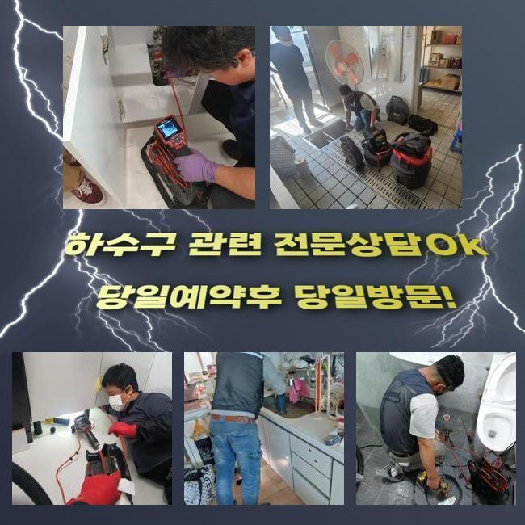
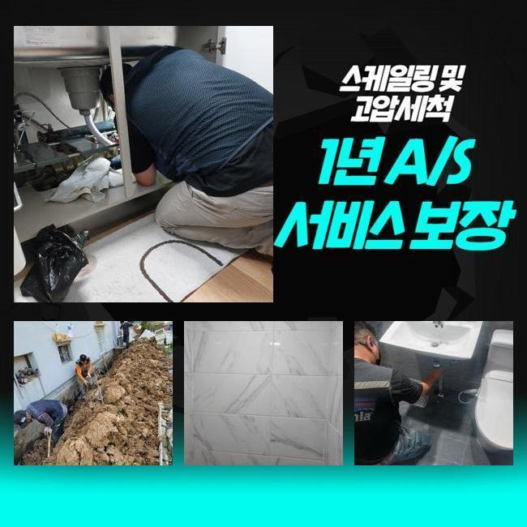
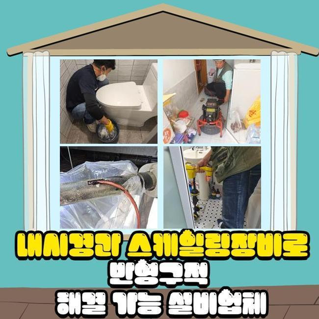
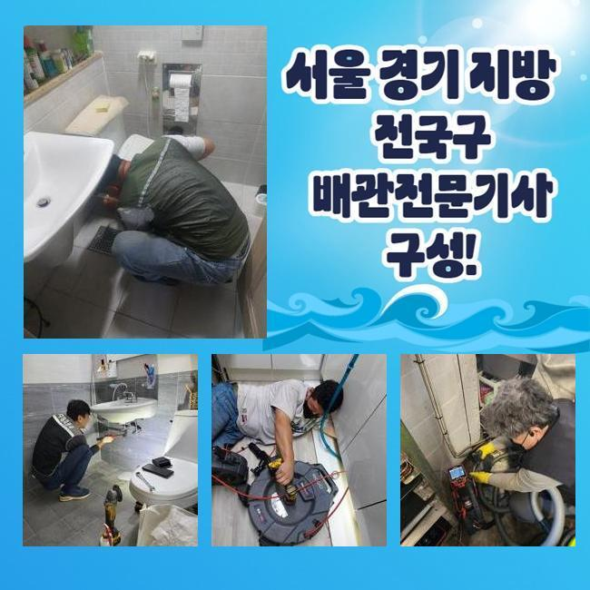
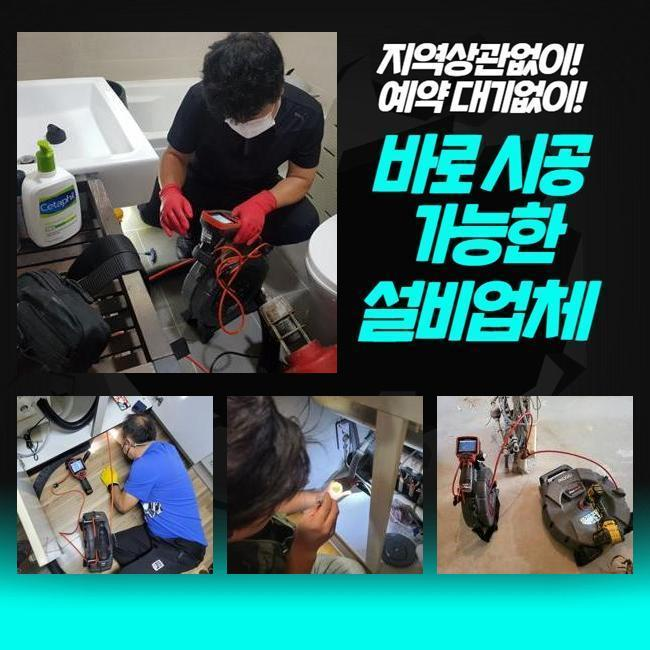
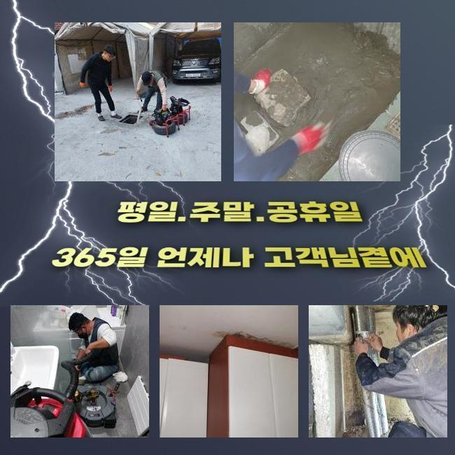
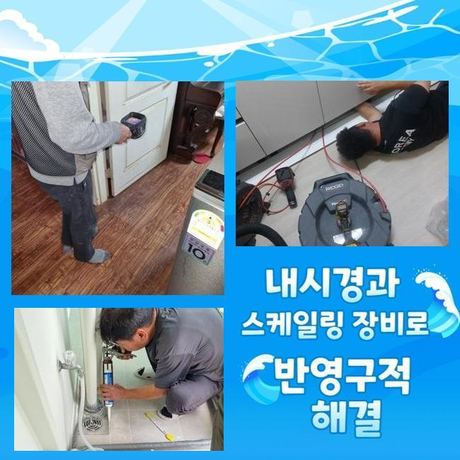

🏠 성동구 마장동오수관뚫음 응봉동 맨홀막힘 배관막힘누수
용인시 처인구 배관막힘 전문 시공 후기

📋 작업 개요
- 위치: 용인시 처인구, 수원시 영통구, 화성시 동탄
- 서비스 유형: 배관막힘, 누수수리, 고압세척, 내시경점검
- 작업 일시:
- 업체명: 하수구수사대 (010-5615-2118)
🔍 문제 상황
성동구 마장동오수관뚫음 응봉동 맨홀막힘 배관막힘누수
갑작스럽게 일어난 하수구막힘으로 인해서 불편함을 느끼고계신가요
배관이사용되는 빈도가높을수록 막히는현상이 일어날가능성이 높다고할수있죠
갑자기 발생된경우라면 당황스러울거에요
배관문제와 연관해서는 다양한원인으로 발현되는까닭에 자가조치를 통해서 처리하려고 무리하지말고 업체와함께 신속하게 해결하실것을 추천해드려요!
이틀전에 해당증세로인해 의뢰주신고객께 방문드렸는데요
어떤연유로 막히게되고 어떤방법을 통하여 대처하는게 좋은지 공개할테니 잘 읽어보세요!
유선으로 간단하게 현장상태를 들어보았지만 직접살펴서 확인하는것이 중요한부분이에요
배관을찾아 오염물을 체크해보니 안쪽만 증세를보인게 아닌거같아 바깥쪽에있는 하수구로 이동해보았죠

🔎 원인 분석
💡 전문가 진단: 정밀 진단 장비를 사용하여 슬러지의 고착 여부를 판명하고 타격/세척 작업을 실시했습니다.
일반적으로 주방하수구에서 발현된 음식잔해물이 하수구내부에서 쌓이기도하며 기름기로인해 배수를 막아버리는것이죠
욕실하수구는 샤워용품찌꺼기와 머리카락들이 뭉쳐서 막히기도하며 석회질같은 오염물들이 돌처럼굳센 이물질로 변하게되죠
다세대로 이루어진 상가의 하수구는 이어져있는 상태이다보니 외부쪽에서 유입되기도해요
이런식으로 이물이 쌓이게되면 배수흐름을 막아버리고 부패상태까지 진행되기에 악취가발현되고 날파리들도 꼬이게된답니다
주방이나 욕실에서 깔끔하게청소를 진행해서 관리를해도 냄새가 발생되는것을 경험하셨을겁니다
이러한문제들은 배관내부쪽에서 발발되는 문제들이죠
어떤곳이라도 하수구내부의경우 두눈으로만 볼수는없죠
그렇다보니 살펴보기위해 내시경장비를 사용해서 하수도속을 확인하고있죠
깜깜하고 깊은부분까지 투입해서 체크해볼수있어 어떤지점에서 문제를보였는지 내시경화면을 통해서 확인할수있다는 장점을가진 기계입니다
저흰 고객분께서 문제가나타난 싱크대배관에서 배관카메라를 투입하여 근본적으로 막힌이유에 대하여 찾도록하고있죠

🔧 작업 과정
예상했던바와 같이 다양한 오염물로인하여 배관안쪽부분이 오염되어있음을 확인했답니다
이런상황을 고객분도 내시경화면으로 증세가어떤지 인지할수있죠
지속적으로 퇴적된다면 음식물과 이물질들이 부패되기에 배관세척작업을 진행해주었어요
석션기계를 통하여 잔해물들을 흡입하는과정을 진행합니다
고인물과 잔해물질들을 흡입한후 스케일링공간을 만들어줍니다
확보한후에는 하수구CCTV를 또넣어서 정확하게 문제지점을 체크해주죠
나름대로 관리를했다고 말씀주셨지만 확인해보니 오염물때문에 막히게된것으로 파악해볼수있었어요
제거과정이 끝난뒤에도 바로작업을 끝내지않아요
재차 일러드리는것은 건물하수구의 대다수는 한곳으로 이어진 구조이기에 이물질제거를 끝마쳐도 다른부분에서 증상이있는지 확인하는작업을 거쳐야해요
다량의 물을쏟아 원활한배수가 이뤄지는지 체크도하는데요
작업과정이 마무리되었다면 물빠지는것이 어떤지 확인시켜드린후 끝마치고있죠
평소배관관리를 어느정도했다고 생각하셔서 좋지않은냄새가 풍길때도 이런문제라고 인지하지못했다고 하셨죠
배수구망을 이용해서 관리를하더라도 확실히이물을 제거할수없어요
그러므로 약간이라도 물빠지는게 느려졌다고 생각이들면 신속히 전문가에게 문의해서 처리하는게 올바른 해결책이랍니다
여러분들께선 배수시스템이 멈추거나 악취가생겨도 잠깐이면 해결될거라고 착각하고계시죠
혹여나 방치하신다면 배관이 노후화되며 시간이흐를수록 배관변형이 발생할수도있으며 하수구에손상이 발생할수있어요


✅ 작업 완료
방치를하실수록 고객님께서 처리하기위해 시간과비용을 감수해야하기에 징조가보일때 조속히확인해 조치를 취하셔야합니다
이런문제는 예방하는방법과 해결책을통하여 최소화시킬수있기에 혹여라도 연관하여 염려되시면 시간관계없이 맘편히 의뢰주시길 바래요
친절히답변하며 분명히 작업계획을 공개해서 우려되지않도록 만족하실만한 결과물들로 보여드릴게요
전국어디라도 1시간안쪽으로 도착해드리고 있으니 문의주셔서 상담을 진행해보시는건 어떨까요




⚠️ 하수구 배관 막힘 예방 및 관리 가이드
- ✅ 머리카락, 비닐, 물티슈 등 물에 분해되지 않는 이물질은 절대 흘려보내지 마세요.
- ✅ 기름기 많은 식기는 설거지 전 키친타올로 먼저 기름때를 닦아내세요.
- ✅ 주기적으로 배수구에 뜨거운 물을 가득 부어주어 유지방 고착을 방지하세요.
- ✅ 작업 후 1년 이내 재발 시 무상 A/S 보증 서비스를 제공합니다.
💡 핵심 정리
- 확실한 장비 작업(내시경 점검 및 샤프트 스케일링)으로 원인을 뿌리 뽑습니다.
- 작업 후 1년 이내에 동일한 부위 재발 시 100% 무상 A/S 서비스를 보장합니다.
- 서울 · 경기 · 인천 전 지역에 24시간 언제든 긴급 출동할 수 있도록 항시 대기 중입니다.
❓ 자주 묻는 질문 (FAQ)
🚨 용인시 처인구 배관막힘 문제로 고민이신가요?
정확한 원인 진단과 확실한 시공으로 재발 없는 해결을 약속드립니다.
24시간 긴급 출동 | 서울 · 경기 · 인천 전지역 | 1년 내 재발 시 무상 A/S